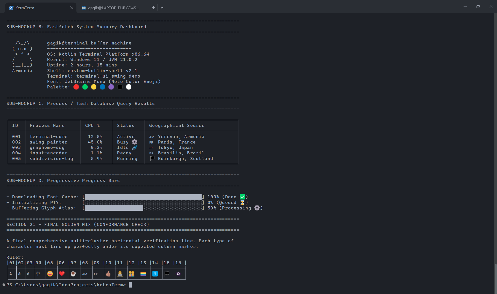

A Premium Desktop Terminal
Built for Modern CLI Workflows
Fast, robust, and highly configurable. KetraTerm delivers deep shell integration, state-of-the-art text layout, and precision terminal behavior without the bloat.

Engineered for Command Line Excellence
Every visual capability, keyboard escape, and shell protocol designed to handle modern CLI and interactive TUI needs.
Kitty Keyboard Protocol
Fidelity key encoding supporting progressive modifier flags. Disambiguates modifier combinations, reports release events, and manages push/pop mode stacks so applications like Helix and Neovim get true desktop-level hotkeys.
Shell Autodiscovery
Automatically discovers and builds configuration profiles for PowerShell, Command Prompt, Git Bash, Bash, zsh, fish, Nushell, and WSL distributions on Windows, macOS, and Linux.
OSC 133 Shell Integration
Injects prompt lifecycle hooks. Captures prompt starts, command boundaries, exit status codes, and timestamps. Renders failure rails on error and allows prompt-to-prompt jump navigation (Ctrl+Shift+Up/Down).
Exceptional Text Layout
Full Unicode 17.0.0 compliance, UAX #29 boundary segmentation, zero-width combining characters (Thai/Lao), and Segoe UI Emoji rasterization. Enforces East Asian Wide, Narrow, and Ambiguous policies.
TrueColor & Styled Underlines
Full 24-bit TrueColor RGB palettes. Renders curly, double, dashed, and dotted underline styles with independent, user-customizable underline colors (SGR 58/59) to bring modern IDE highlighting to your TUI.
Margin & Scroll Physics
Implements independent horizontal (DECSLRM) and vertical (DECSTBM) scroll margins, alternate screen save slots, and protected cell erasures (DECSCA) to isolate TUI application structures.
Strict Security Gates & Audited Protocols
Terminal output shouldn't have unrestricted access to your machine. KetraTerm validates and filters every host-affecting escape sequence through a central policy layer before execution.
-
✔
Audited OSC 52 Clipboard Read/query is blocked entirely by default to prevent malicious processes from stealing secrets. Writes are audited, size-checked, and gatekeeper-prompted before modifying the platform clipboard.
-
✔
Anti-Fingerprinting Protocols DA3 device attributes query responses remain silent to prevent tracking through unique hardware identifiers. Window position reports (CSI 13 t) are disabled to protect against clickjacking.
-
✔
Origin-Aware Window Title Updates Evaluates title rename sequences based on origin (local shells vs remote SSH). Long values are clamped or rejected, preventing confusion and phishing.
Security Policy Boundaries
| Feature Gate | Default Enforced Boundary |
| OSC 52 Clipboard Write | Prompt on Local / Deny on Remote |
| OSC 52 Clipboard Read | Deny All (Blocked) |
| CSI Window Manipulation | Ignored / Gated by Settings |
| DA3 Device Identity | Silent (Fingerprint Guard) |
| OSC 7 Working Directory | Gated at 4096 characters |
| Clipboard Payload Capacity | Limited to 1 MB maximum |
Comparing Modern Terminal Emulators
See how KetraTerm stacks up against other top-tier CLI environments.
| Capabilities | KetraTerm | Ghostty | Warp | Alacritty | WezTerm | iTerm2 |
|---|---|---|---|---|---|---|
| Native Windows Support | ✔ (ConPTY) | ✘ | ✘ | ✔ | ✔ | ✘ |
| Kitty Keyboard Protocol | ✔ (Progressive flags) | ✔ | ✘ | ✘ | ✔ | ✘ |
| Styled Underlines (Curly/Dashed) | ✔ (Custom colors) | ✔ | ✘ | ✘ | ✔ | ✔ |
| OSC 133 Command Markers | ✔ (Gutter & exits) | ✔ | ✔ | ✘ | ✘ | ✔ |
| Audited OSC 52 Clipboard Gate | ✔ (Origin & write prompt) | ✘ | ✘ | ✘ | ✘ | ✘ |
| JVM / IDE Embeddability | ✔ (Zero native JNI bloat) | ✘ | ✘ | ✘ | ✘ | ✘ |
Comprehensive TOML Configuration
No obscure dotfiles. Manage your fonts, themes, security boundaries, and shell defaults in a single, well-documented TOML file.